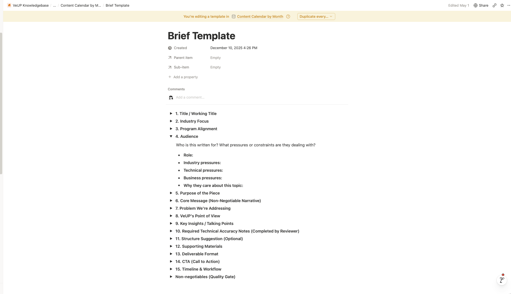
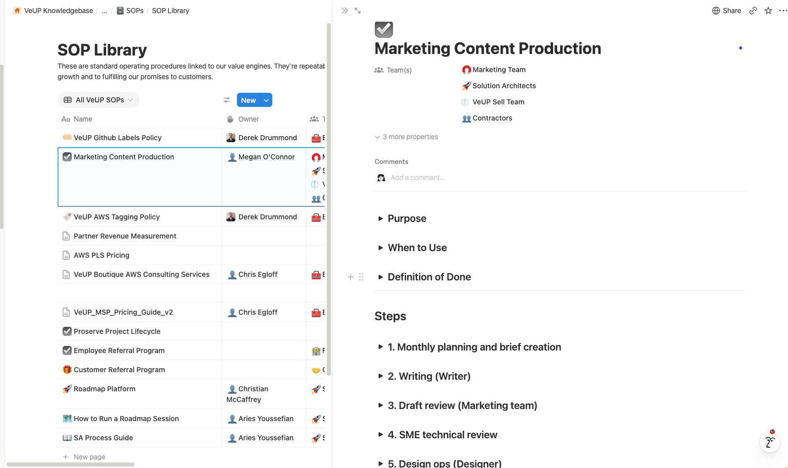
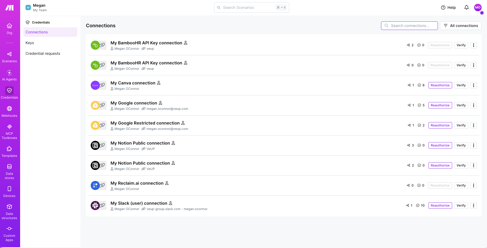
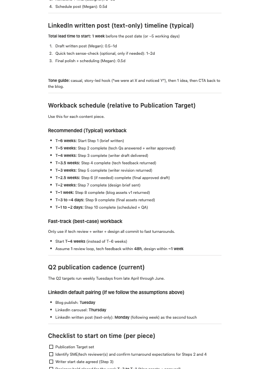

Fast, structured delivery when a request appeared.
Service overviews, sales collateral and immediate business needs moved through structured intake, prioritisation, production and approval.
The creative work was not always the slow part. Everything around it was.
Requests arrived reactively, often without the information needed to act on them. I redesigned the system around the work, from intake and planning through production, approval and publishing.
We did not need to get faster at reacting. We needed to stop working reactively.
At a glance
Strategic contribution
I developed marketing programmes aligned with leadership-defined service priorities and content pillars, connecting service launches, articles, LinkedIn content, lead magnets, newsletters, sales collateral, events and calls to action. A six-week workback supported a forward content pipeline.
I structured request intake, briefs, routing and approvals to reduce coordination and speed comparable collateral. The 75–80% reduction is an internal estimate for routine handling effort, not a company-wide productivity measurement.
At VeUP, I briefed and directed external writers and designers, coordinated developers and agency partners, managed reviews and approvals, and maintained quality across connected workstreams.
For comparable ad hoc collateral, measured from a complete request entering the workflow.
Once the request entered the structured workflow, depending on urgency.
A conservative comparison across coordination, copy, routine design, review routing, status updates and publishing.
Internal handling time for comparable routine collateral, with human oversight retained at quality-critical points.
Service overviews, sales collateral and immediate business needs moved through structured intake, prioritisation, production and approval.
Recurring content worked backwards from publication, with lead time for writing, SME review, design and scheduling.
Two types of demand. One operating system. Hover, focus or tap for detail.
A request could arrive without the audience, objective, technical context or even the information needed to write the copy. I could spend around six hours gathering answers before a three-page service overview was ready to start.
Then came writing, design, reviews, approvals, publishing and the inevitable “Where are we with this?” messages in between. The first draft often became the point at which missing requirements surfaced.
The work was not short of effort. Too much of that effort was happening in the wrong places.
I mapped the route from marketing need to published asset, including the information, decisions, people and dependencies required at each stage.
Instead of accepting incomplete requests and filling the gaps myself, I designed the required inputs into the workflow before ad hoc work reached creative. Recurring marketing content followed a separate planned cadence, using the same underlying production system.
Structured intake replaced the back-and-forth at the beginning. Requesters answered the questions needed to produce the work before it entered the creative queue, and those inputs generated a usable brief.
The system assessed requests against available capacity, flagging whether work could stay in-house or should be routed to external support. I built the production layer in Notion, connecting work to its publication target, stage, owner, dependencies, content pillar and SME reviewers.
Then I connected repetitive handoffs using Make, Slack, Tally, email, APIs and AI. Reviews triggered notifications, approvals moved work forward and recurring processes no longer depended on manual reminders. Automation handled the movement. People kept the decisions.
Publication targets, production stage, dependencies, content pillars, industry and SME reviewers lived in one operational view.
The brief captured audience, purpose, message, problem, VeUP point of view, technical notes, supporting material, deliverable, CTA and timeline.

The Marketing Content Production SOP defined purpose, when to use the process, definition of done, and the sequence of responsibilities across teams.

Make connected operational tools so reviews, updates and routing could happen without another manual handoff.

For recurring blogs and LinkedIn content, I moved planning away from isolated requests and worked backwards from publication instead. A core topic could become a coordinated set of five connected pieces of collateral, mapped to marketing goals and scheduled in advance.
The blog workback began six weeks before publication, with defined windows for technical input, writing, review, design, revisions, scheduling and QA. Related LinkedIn content followed its own shorter workback around the main piece.
Each stage had an expected window, owner and buffer. Dependencies became visible early enough to manage instead of appearing halfway through production.

Later, the AI creative system plugged into the same operating model. Approved briefs moved to specialist copy and design agents built around VeUP’s tone of voice, audience, format and design rules.
For a typical three-page overview, copy that previously took two to three hours could require around 10–15 minutes of review. Routine design moved through the design agent and returned for roughly 10–20 minutes of human refinement.
The production layer starts only once the information needed to make the work is complete.
Specialist agents apply audience, funnel, tone, format, word-count and design-system rules.
Judgement stays with the Creative Lead before the work moves into stakeholder approval and publishing.
For ad hoc collateral, the same stages still existed. What changed was how much manual effort sat between them. Complete inputs, automated routing and clear status changes turned a fragmented request into one visible path to delivery.
More capacity came from removing the work around the work.
The time comparison is an illustrative, conservative estimate based on a standard three-page service overview and the stages described in this case study. Calendar turnaround and hands-on effort are separate measures.
This was not a Creative Ops transformation brief handed to me. I was experiencing the friction from inside the process and started redesigning it.
I mapped the operating model, built the intake and production workflows, introduced forward planning and capacity logic, defined SOPs and ownership, managed external-resource routing, and connected the surrounding tools through automation, APIs and AI.
It shifted my role from keeping individual requests moving to designing how a creative and marketing function could move work reliably at scale.